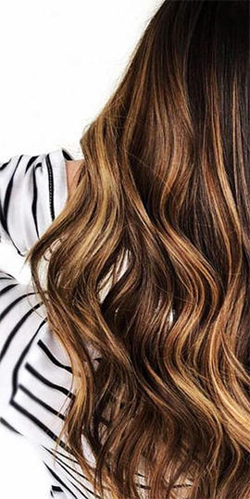
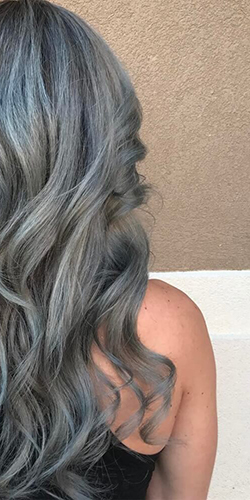
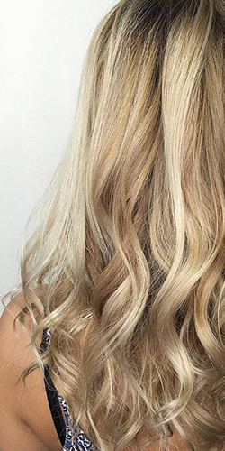
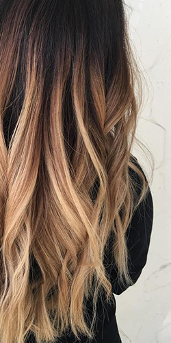

Colour Pro provides you with any colour you could want for your hair. Here at colour pro, our professionals take great care of your hair to give you exactly what you envisioned (or even better)!
With our unlimited options, you can come for a full or partial coloration, balayage, highlights, ombré, ect… we do it all, and we do it well!
Our salon provides you with a unique blend of colour to perfectly match your style and skin tone, guaranteeing full satisfaction. Download our survey to come with your ideas prepared for the
consultation to receive a professional opinion. Make sure to include your past colouring history to avoid any possible bad mixes or reactions. Our stylists will approach your desired look
with your history in mind to get you the best possible result. Our goal is to have you leave satisfied, healthy, and confident about your fantastic hair.
Don’t know a coloration term? Don’t be afraid to ask so there is not misunderstanding.
Want to know more about your options and prices? See below!
Balayage

This style comes from the French word “Balayer” which means to sweep, and aims to create natural sun-kissed highlights. It is softer and less noticeable than highlights, giving it a more natural look. This style emulates the parts of your hair that would normally be highlighted by just being under the sun. This is a free hand technique, meaning there is no foil or meche used.
Price starts at $100
Full Coloration

Want to change your entire hair colour? We offer a wide range of colors mixed to match the exact tone you want. Get creative, natural, or both! Our stylists have perfected the trends you’ve seen, but they also are experts with the classics. Here at Pro Colour we offer permanent, semi-permanent, and demi-permanent. We can also help you get rid of your colour and go back to your natural hair.
Price starts at $125
Highlights

This technique looks similar to balayage in the end if you are going for a softer look, but does invovle bleach and foil compared to balayage which is done free hand. This also means you can be more precise with where you want your highlights compared to with the balayage technique. You can also go less natural than balayage if you are looking for a more dramatic look or bigger contrast!
Price starts at $90
Ombre

This technique comes from the French word “ombre” which means shade. This looks is a little more dramatic and less natural looking. It consists of keeping the roots darker and gradually having the tips becoming lighter. This can however also be done in any other colour. There is also a type of ombré called sombré, where the two tones are not as dramatic, giving it a softer look.
Price starts at $80